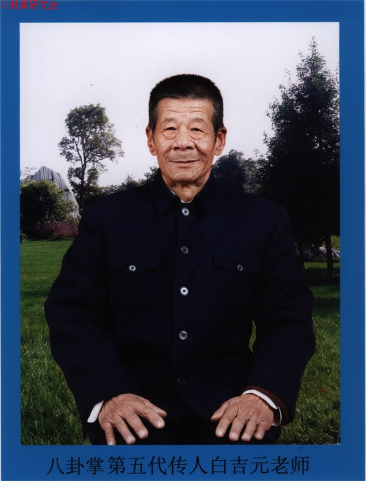

八卦掌第五代传人白吉元先生简介

白吉元先生1932年生于北京，现年77岁有余。受家族影响，白吉元先生从12岁起开始习武。先后学习了形意拳、通背拳、八极拳、八卦掌等拳法。
1957年，白吉元先生拜八卦掌第四代传人高子英先生为师，进一步深入系统地学习八卦掌、形意拳等拳术。高子英先生对白吉元先生关爱备至，倾囊相授，而白
吉元先生对高子英先生也是恭敬有加，潜心学习。师徒如父子，在恩师的悉心传授下，多年来专心苦练，走桩行掌，操拳练臂，不畏艰辛，融会贯通，使武功更
加纯熟精化。其间经高子英先生介绍，又得到过李子鸣、孙建云、王荣堂、王侠英、王侠琳等武术界前辈的精心指点。至今习武已达六十余年，形成了功力扎实
，身法灵活，出手迅捷，刚柔相济，变化自如的自身风格。特别是八卦掌散手功夫，更为行家所称道。
白吉元先生自上世纪60年代开始收徒授拳。当时在白先生居住的自家院内，摆放着各种武术器械和练功器具，从早到晚都有弟子在此练功习武。在附近的公园中
，也经常能看到白先生带领弟子们打拳，练功，表演，交流。
近年来，又有许多武术爱好者拜在白吉元先生门下学习武术。在北京柳荫公园，青年湖公园，元大都遗址公园和紫竹院等地都能见到白吉元先生与弟子们习武的
身影。目前白先生的弟子已逾百人，分布于士农工商，科教文卫等各行各业，来自于北京、河北、天津、等地。
为适应当前全民健身，追求健康的需要，白吉元先生还向年老体弱者传授了“无极学、养生功”。以无私无欲，无我无他，天地合一的理念，外舒筋骨，内修元
气，对习练者的健康、长寿起到了积极的作用，深受欢迎。
白吉元先生自幼受到中华民族传统美德的影响，为人宽厚、谦和、简朴、正直，要想学好武，先要做好人，一言一行都体现出高尚的武德。为弘扬、传承中国传
统武术文化，一直无私地把自己习练的各门派拳法和经验传授给弟子和广大武术爱好者。
白吉元先生的八卦掌网站已经开通，其宗旨是给广大武术爱好者提供一个互相交流学习的平台。不拘门派、不抱成见、海纳百川、相互学习、取长补短、共同提
高，使中华武术得以弘扬光大。
白吉元八卦掌培训班地址：北京市柳荫公园北门（中国北京市东城区黄寺大街甲8号）
联系人：白吉元老师
联系电话：13439039692